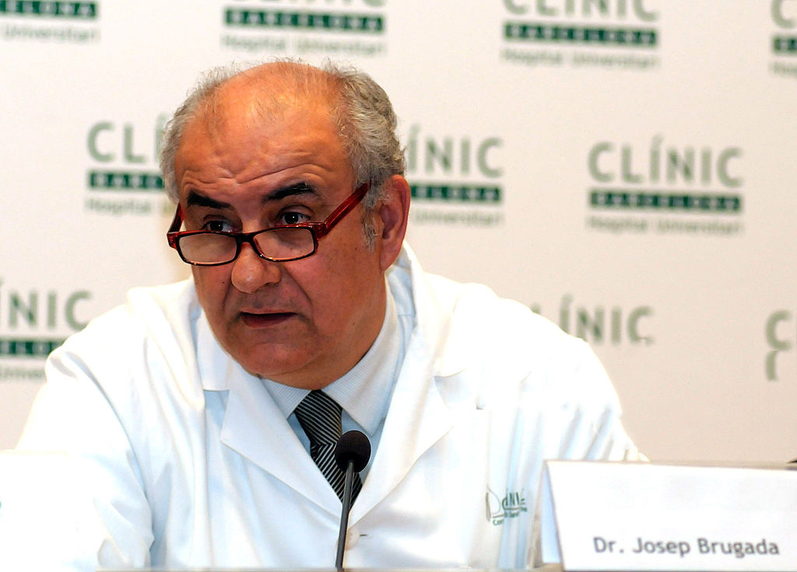
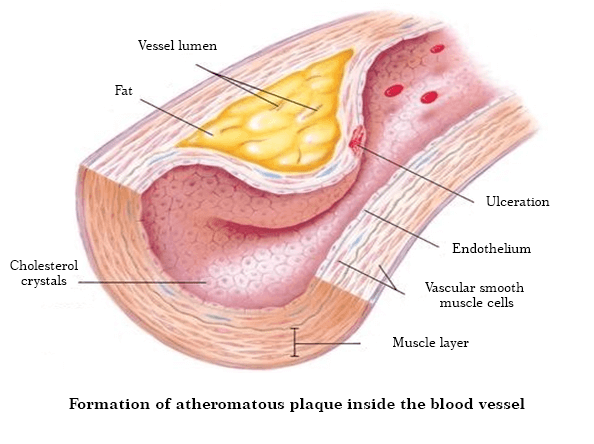

Cómo se trata la presión arterial alta en Suiza. Un cardiólogo suizo con raíces españolas fue entrevistado por la televisión local.
Dr. Josep Brugada es el presidente del Centro de Cardiología Clínica de Ginebra.
Josep Brugada vino a Madrid para compartir su experiencia con compañeros y ver cómo se trata la hipertensión en nuestro país. En España la medicina todavía está por detrás del resto de Europa.
Después de una entrevista televisiva, el Dr. Josep Brugada aceptó responder nuestras preguntas y dar sus recomendaciones. El médico contó cuál es el problema de nuestra medicina y dijo que los pacientes hipertensos en nuestro país nunca se recuperarán.
En su entrevista con los periodistas, habló de los terribles problemas de nuestra medicina, cuando escuchamos esto nos sorprendió mucho. ¿Puedes comentar sobre esto?
No quiero ofender a nadie, respeto a este país y a sus habitantes, pero quiero repetir lo que ya he dicho. La escala del problema es aterradora, pero por alguna razón todos hacen la vista gorda. La medicina en España está al mismo nivel que hace 20 o 30 años. Al menos me refiero al tratamiento de las enfermedades cardíacas y la presión arterial alta.
Basta escuchar lo que recomiendan los médicos para el tratamiento de la hipertensión arterial en España: lisinopril, amlodipino, clortaclido, enalapril, valsartán y otros fármacos similares
Estos medicamentos no curan la presión arterial alta, solo la reducen temporalmente. Ahora imagine lo que le sucede a nuestro cuerpo después de drogas tan fuertes. El paciente toma el medicamento, su presión arterial baja. Sin embargo, después de un tiempo, la presión vuelve a subir. Tales cambios causan más daño al cuerpo que la presión arterial alta estable. Los vasos sanguíneos se descomponen muy rápidamente y existe riesgo de ataque cardíaco o accidente cerebrovascular.
En Suiza, este método para tratar la hipertensión no se ha utilizado durante más de 20 años. Y los médicos recetan píldoras para bajar la presión arterial en casos raros, ¡y tales medicamentos no deben tomarse todos los días! En Suiza, los análogos de medicamentos tan fuertes se venden solo con receta médica, y se advierte al paciente sobre todos los riesgos de tomar dichos medicamentos.
¡Y nuestros médicos y farmacéuticos están matando gente! Está claro que la venta continua de medicamentos costosos es más rentable que si el paciente comprara un medicamento y se curara de la hipertensión para siempre. Esto no es rentable para las empresas farmacéuticas. Por supuesto que es terrible.
¿Cómo se trata la hipertensión arterial en Suiza?
Los científicos suizos han descubierto durante mucho tiempo que es necesario eliminar las causas de la presión arterial alta y no combatir los síntomas. Esta es la clave para un tratamiento completo y seguro. ¿Cuál es la principal causa de hipertensión arterial? ¡Estrechamiento del lumen de los vasos sanguíneos! La hipertensión relacionada con la edad ocurre en humanos con el tiempo y en el 96% de todos los casos. La medicina suiza moderna trata este tipo de hipertensión.
Imagina que los recipientes son tuberías. Las paredes de las tuberías están sucias, es más difícil hacer pasar agua a través de ellas. Sin embargo, el agua debe fluir y pasar por las tuberías en cantidad suficiente. ¿Qué se debe hacer para hacer correr el agua con éxito? Así es, aumente la presión. Eso es lo que hace el corazón. Y esto conduce a un aumento de la presión arterial, lo que significa un rápido aumento del músculo cardíaco. Pero los científicos suizos han ideado otro método: limpiar los vasos de la contaminación. Así es como se trata la hipertensión en Suiza.
En el año 800, los curanderos comenzaron a usar una decocción especial hecha de hierbas medicinales raras. Estas hierbas reducen los niveles de colesterol; como resultado, los vasos sanguíneos se limpian, la circulación sanguínea se normaliza y la presión arterial vuelve a la normalidad. Este método ayudó hace muchos años y ayuda ahora. Las hierbas medicinales son la única forma infalible de mantener bajo control su presión arterial. No se necesitan más medicamentos para bajar la presión arterial. Al limpiar los vasos de esta manera, dejará de tener miedo de que la alta presión destruya los órganos internos. La gente puede recuperarse.
Cuando vi las estadísticas médicas en España, me quedé impactado. España tiene un elevado número de muertes (millones de personas mueren cada año por infartos y infartos). ¡Pero esto no es cáncer, esto no es SIDA, esto es presión arterial alta! ¡El 80% de los pacientes hipertensos no vive hasta los 60 años!
En Suiza, sin embargo, la hipertensión relacionada con la edad y la presión arterial alta no se consideran una enfermedad peligrosa. Un aumento de la presión arterial solo indica que los vasos están sucios y deben limpiarse. Después de eso, la presión deja de aumentar y la persona continúa viviendo una vida normal y saludable.
¿Cómo se limpian los vasos sanguíneos en Suiza?
Actualmente, existen productos especializados diseñados para limpiar los vasos sanguíneos del colesterol. El mejor de estos es . Este producto no contiene productos químicos. El producto es 100% natural y contiene extractos curativos raros de hierbas y bayas: espino, lúpulo, agripalma, hierba de San Juan, tilo y cola de caballo. Por eso es tan beneficioso para el organismo.
incluye más de 40 componentes. No enumeraré todo, solo nombraré algunos.
| Extracto de espino | Reduce la presión arterial de forma natural. Evita la acumulación de sales de sodio en células y vasos sanguíneos. |
| Extracto de hierba de San Juan | Elimina las toxinas de los vasos sanguíneos. |
| Extracto de agripalma | Limpia los vasos sanguíneos del colesterol |
| Extracto de cola de caballo | Aumenta el contenido de oxígeno en la sangre. |
| Extracto de flor de tilo | Expande los vasos sanguíneos, reduce la presión arterial inmediatamente después de tomar las gotas. |
| Vitamina B12 | Nutre y tonifica |
| Potasio | Elimina el exceso de líquido del cuerpo. |
| Sodio | Reduce la hinchazón que a menudo ocurre en pacientes con hipertensión. |
| Fósforo | Aumenta el tono de los vasos sanguíneos, estabiliza la función del sistema nervioso. |
| Calcio | Reduce el riesgo de crisis hipertensiva y accidente cerebrovascular. |
¿Este remedio se vende en farmacias en España?
No, y este es el principal problema. Nuestros médicos prefieren alimentar a las personas con pastillas para la presión arterial en lugar de tratar la hipertensión.
Hasta donde yo sé, los fabricantes de querían entrar en el mercado farmacéutico español, pero la burocracia en España es ineludible y los fabricantes todavía no han dado una respuesta. Pero hay una explicación para esto: si sale a la venta en farmacias, las compañías farmacéuticas sufrirán enormes pérdidas. ¿Por qué comprar pastillas para la presión caras si puede curar la hipertensión de una vez por todas y por un precio razonable? Desafortunadamente, ¡la farmacología hoy en día es un negocio! Incluso en Europa.
¿Qué consejo le daría a los pacientes españoles con hipertensión arterial?
En primer lugar, no se desespere. Hay una salida. Hemos acordado con el mayor Instituto Español de Cardiología, que muy probablemente venderá a todos los españoles que padecen hipertensión. El Instituto produce y distribuye la cantidad requerida de a un precio con descuento.
Ahora déjeme decirle lo que debe hacer para ordenar a un precio con descuento:
- Complete el formulario de pedido en este sitio.
- Después de eso, el especialista se comunicará con usted para confirmar la dirección de entrega.
Podrá recibir `` con entrega a domicilio dentro de 2-3 días, el pago se realiza después de recibir el paquete.
Publicamos los resultados de una encuesta que se realizó entre quienes probaron . El fabricante pidió a todas las personas que compraron el producto que participaran en una encuesta y ayudaran a averiguar si ayudó a mejorar su bienestar. Actualmente, unas 5.000 personas ya han participado en la encuesta.
Los resultados del examen de los pacientes que se someten al tratamiento:
- Presión arterial completamente estabilizada - hipertensión curada: 98% de los encuestados
- El pulso volvió a la normalidad: el 97% de los encuestados;
- Los dolores de cabeza desaparecieron: el 99% de los encuestados;
- Visión mejorada: 74% de los encuestados;
- El estado de salud ha mejorado: el 99% de los encuestados.
Como puede ver, ha ayudado a muchos ciudadanos españoles a deshacerse de una enfermedad mortal en solo 1 tratamiento.
¿Cuánto tiempo estará disponible al precio con descuento?
El instituto distribuirá a un precio con descuento hasta agotar el stock. Quiero advertirle que quedan muy pocos paquetes de . Las personas notan rápidamente la eficacia de este producto en comparación con otras píldoras caras y solicitan en grandes cantidades.
Tener los vasos sanguíneos limpios es garantía de salud.
Comentarios